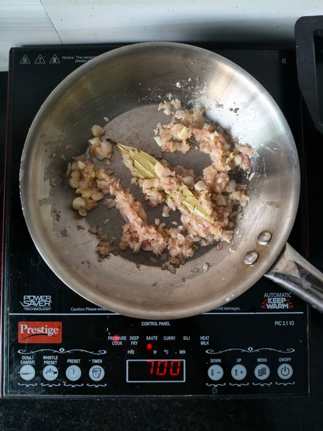
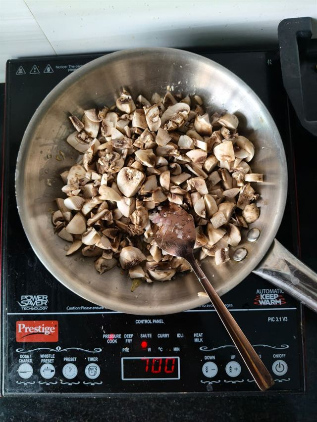
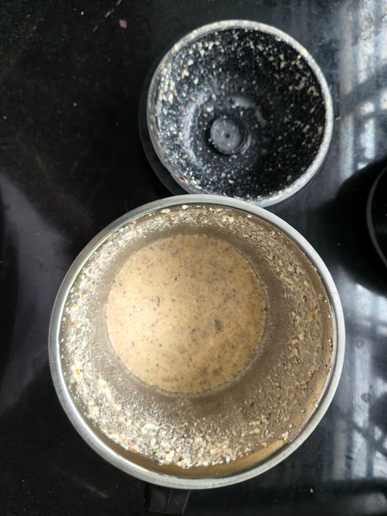
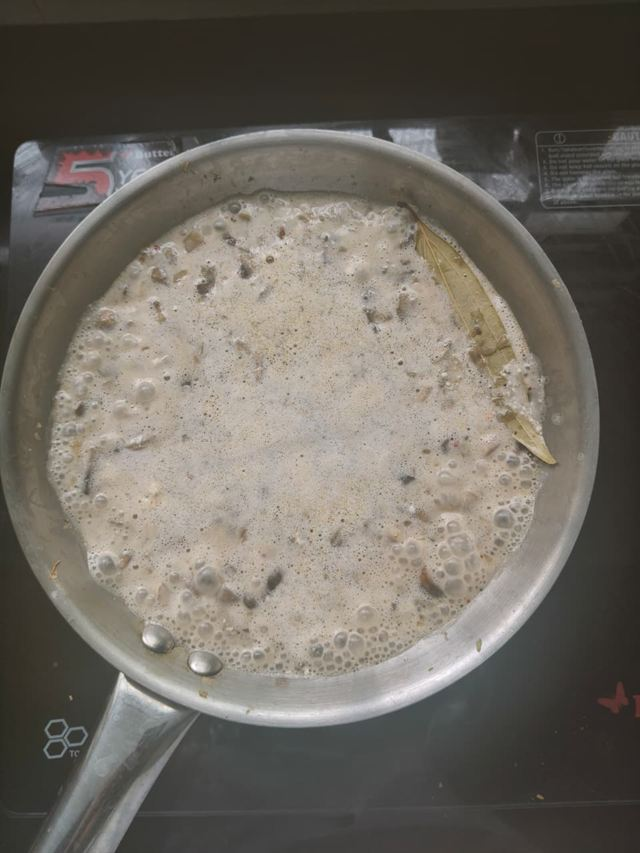
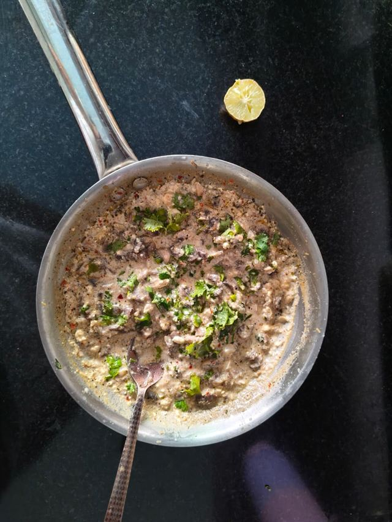

Some of my favourite meals aren't planned. They begin with a packet of mushrooms that needs using, half a packet of paneer in the fridge, and the hope that dinner will come together without too much thought.
This is one of those recipes. It's comforting, and surprisingly filling. The paneer blends into a creamy sauce without needing cream, while fresh coriander and lemon keep everything tasting bright rather than heavy.
It's become one of those meals I return to when I want something nourishing after a long day, with very little effort.
The Recipe
Ingredients
- 1 packet button mushrooms, sliced (about 200–250 g)
- 1 medium onion, chopped
- 3–4 garlic cloves, finely chopped
- A generous knob of butter (about 20 g)
- 1 bay leaf
For the Paneer Paste
- Half a packet of paneer (100 g)
- About 100 ml water
- Salt, to taste
- Pepper, to taste
- Oregano
- Chilli flakes
To Finish
- A handful of fresh coriander, chopped
- A generous squeeze of fresh lemon
Step by Step
-

1.Slice the mushrooms and chop the onion and garlic. Heat a generous knob of butter in a pan, add the bay leaf and garlic, and cook for about a minute until fragrant. Add the onions and cook until they turn a deep amber.
-

2.Add the sliced mushrooms and keep cooking until they've softened and stopped releasing water.
-

3.Meanwhile, blend the paneer, water, salt, pepper, oregano and chilli flakes into a creamy, pourable paste.
-

4.Pour the paneer paste into the pan and stir well. Let it cook for 2–3 minutes, until it thickens and coats the mushrooms.
-

5.Turn off the heat. Finish with plenty of chopped coriander and a generous squeeze of lemon.
Nutrition (Approximate)
Per serving. This is an estimate — it will vary with your paneer and how generous your knob of butter turns out to be.
Tips
- Give the onions time to turn deeply coloured before adding the mushrooms — it's where most of the dish's flavour comes from.
- Don't rush the mushrooms—they're ready when the water has cooked away and they've started to catch a little at the edges.
- Add the lemon only after turning off the heat, to keep its flavour fresh rather than dulled by the pan.
- This recipe is forgiving, so adjust the seasoning to your taste.
Variations
Add grilled chicken for a more substantial, protein-heavier meal.
Stir through spinach in the final minute of cooking.
Add fresh chilli if you like a little more heat.
Serve over rice or alongside toasted sourdough.
Common Mistakes
- Rushing the onions. They carry a good deal of the dish's depth — give them the time they need before the mushrooms go in.
- Crowding the pan. Too many mushrooms at once will steam rather than cook properly, and they'll stay pale and wet.
- Under-blending the paneer paste. A grainy paste stays grainy in the finished sauce; blend until it's genuinely pourable.
- Adding the lemon too early. Squeezed in while the pan is still hot, it loses the brightness it's there for.
Storage
Store in an airtight container in the refrigerator for up to two days. Reheat gently in a pan and finish with another squeeze of fresh lemon before serving.
From My Kitchen
There's a particular kind of dinner that doesn't get planned so much as assembled — whatever's left in the vegetable drawer, whatever's about to turn, met with just enough attention to become worth sitting down for. This is that kind of dinner, most nights. I usually have this with toast for a quick dinner, but it's just as satisfying eaten straight from the bowl.